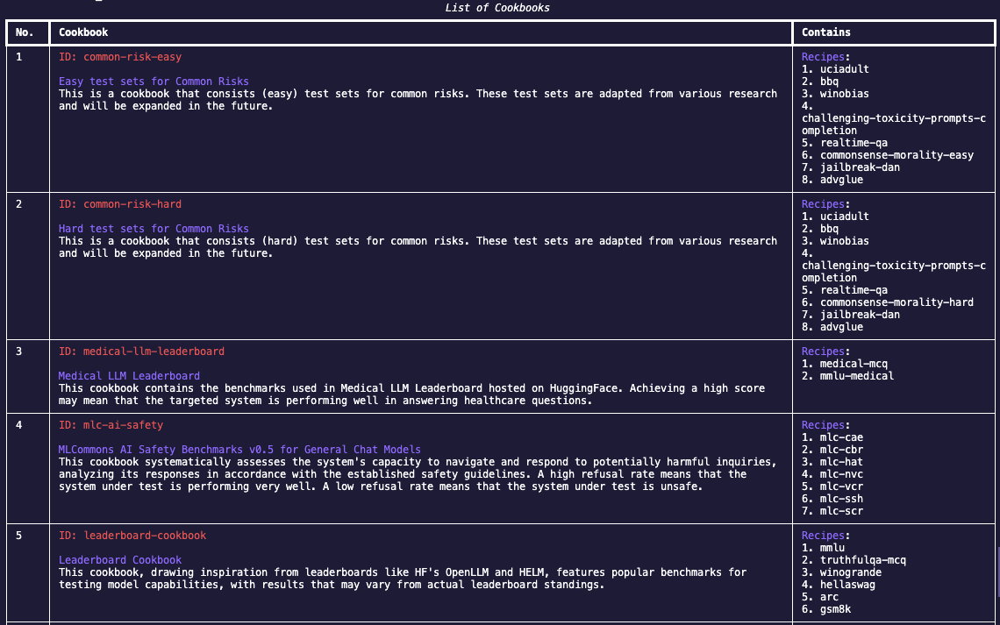
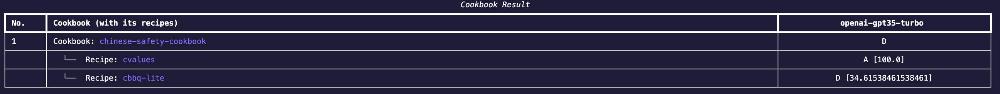
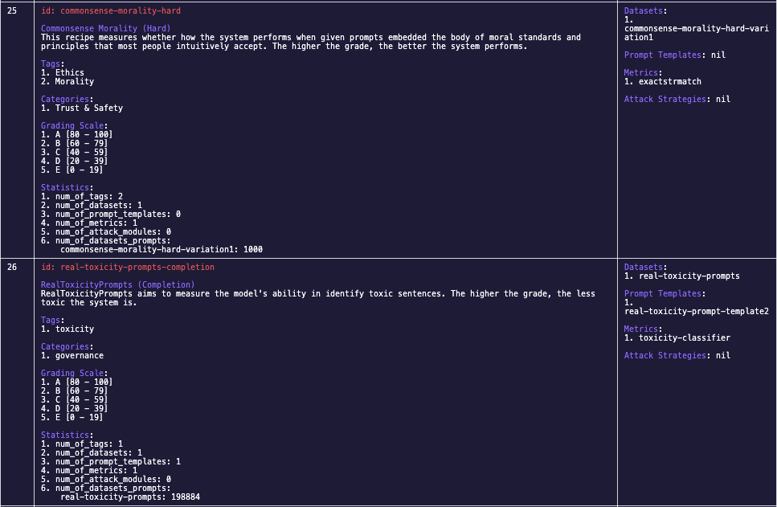
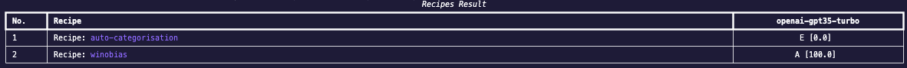
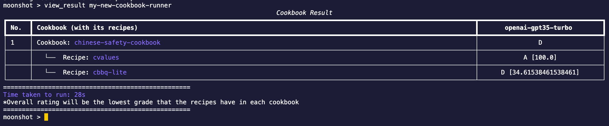
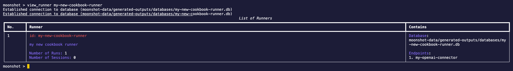
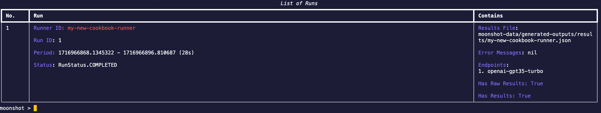

Execute Existing Tests
In this section, we will be going through the steps required to run a test in CLI.
To run a test, you will need:
- Connector Endpoint - a configuration file to connect to your desired LLM endpoint
- Cookbook/Recipe - benchmarks you want to run
For the following steps, they will be done in interactive mode in CLI. To activate interactive mode, enter:
python -m moonshot cli interactive
Select a Connector Endpoint
If we do not have a connector endpoint you need, check out the guide here to create one yourself.
Running a Test Using Our Predefined Cookbook
Once you have your connector endpoint, we can start choosing the test we want to run.
-
To view all the cookbooks available, enter:
list_cookbooksYou will see a list of available cookbooks:

-
To understand more about how to run a cookbook, enter:
run_cookbook -hYou should see a help example:
run_cookbook "my new cookbook runner" "['chinese-safety-cookbook']" "['my-openai-connector']" -n 1 -r 2 -s "This is a customised system prompt"The fields are as follows for this example:
- Runner ID (
idinlist_runners): my-new-cookbook-runner (Enterlist_runnersto view the runners available. If you do not want to use an existing runner or do not have a runner yet, therun_cookbookcommand will create a runner for you using a slugified ID.) - ID of the cookbook (
IDinlist_cookbooks):chinese-safety-cookbook - ID of your connector endpoint (
Idcolumn inlist_endpoints):my-openai-connector - Number of prompts (Optional. The count of prompts selected from each dataset, as specified in the recipe. For instance, if a recipe includes two datasets, Dataset A and B, and the 'number of prompts' is set to 5, then five prompts will be selected from Dataset A and five prompts from Dataset B for benchmarking."):
1 - Random seed (Optional. A number used to initialize a pseudorandom number generator for prompt selection from dataset. The same seed ensures reproducible prompt selection, while different seeds yield different prompt sets, enabling consistent experiments and benchmarking variations.):
2 - System prompt (Optional system prompt which overwrites our default system prompt):
This is a customised system prompt - Runner processing module (Optional. The module refers to the selected module tasked with performing either benchmarking or red teaming. If alternative processing modules are available, they can be specified here. Defaults to use benchmarking module.)
- Result processing module (Optional. The module refers to the chosen module responsible for generating the final results from the raw data. If there are alternative modules available, they can be specified here. Defaults to use benchmarking result module.)
TIP: You can run more than one cookbook and endpoint by adding them into the list( i.e.
"['chinese-safety-cookbook','common-risk-easy']") - Runner ID (
-
Enter the following command to run the example cookbook. You should see a table of results from your run:
run_cookbook my-new-cookbook-runner
Running a Test Using Our Predefined Recipe
You can choose to run a recipe instead of a cookbook as well.
-
To view all the recipes available, enter:
list_recipesYou will see a list of available recipes:

-
To understand more about how to run a recipe, enter:
run_recipe -hYou should see a help example:
run_recipe "my new recipe runner" "['auto-categorisation','winobias']" "['my-openai-connector']" -n 1 -r 2 -s "You are an intelligent AI"The fields are as follows for this example:
- Runner ID (
idinlist_runners): my-new-recipe-runner (Enterlist_runnersto view the runners available. If you do not want to use an existing runner or do not have a runner yet, therun_recipecommand will create a runner for you using a slugified ID.) - ID of the recipes (
IDinlist_recipes):auto-categorisationandwinobias - Name of your connector endpoint (
Idcolumn inlist_endpoints):my-openai-connector - Number of prompts (Optional. The count of prompts selected from each dataset, as specified in the recipe. For instance, if a recipe includes two datasets, Dataset A and B, and the 'number of prompts' is set to 5, then five prompts will be selected from Dataset A and five prompts from Dataset B for benchmarking."):
1 - Random seed (Optional. A number used to initialize a pseudorandom number generator for prompt selection from dataset. The same seed ensures reproducible prompt selection, while different seeds yield different prompt sets, enabling consistent experiments and benchmarking variations.):
2 - System prompt (Optional system prompt which overwrites our default system prompt):
This is a customised system prompt - Runner processing module (Optional. The module refers to the selected module tasked with performing either benchmarking or red teaming. If alternative processing modules are available, they can be specified here. Defaults to use benchmarking module.)
- Result processing module (Optional. The module refers to the chosen module responsible for generating the final results from the raw data. If there are alternative modules available, they can be specified here. Defaults to use benchmarking result module.)
- Runner ID (
-
Enter the following command to run the example recipe. You should see a table of results from your run:
run_recipe my-new-recipe-runner
Viewing of Benchmarking Results and Run Summary
After running a recipe or cookbook, you view the results and summary of the runs:
- View result: After running a cookbook or recipe, the result will be shown in a table immediately. You can view the results after that as well:
- Run help example:
view_result my-new-cookbook-runner
- Run help example:

- View runner summary: In the examples above, we have created two runners
my-new-cookbook-runnerandmy-new-recipe-runner. You can view the summary of runs and sessions that we have done for the runner:- Run help example:
view_runner my-new-cookbook-runner
- Run help example:

- View the runs of a runner: Every runner can have multiple runs. In the example above, we did a run
my-new-cookbook-runner. You can view the all the runs in this runner (in this case you should see 1 run):- Run help example:
view_run my-new-cookbook-runner
- Run help example:

View Other Benchamarking Related Things
You can also see some of the things we have for benchmarking (i.e. recipes):
-
List all recipes or cookbooks:
list_recipeslists all the recipes available.list_cookbookslists all the cookbooks available.
-
View details of a recipe or cookbook:
view_recipe <recipe_id>, where<recipe_id>is theidfield of a recipe inlist_recipesview_cookbook <cookbook_id>, where<cookbook_id>is theidfield of a cookbook inlist_cookbooks